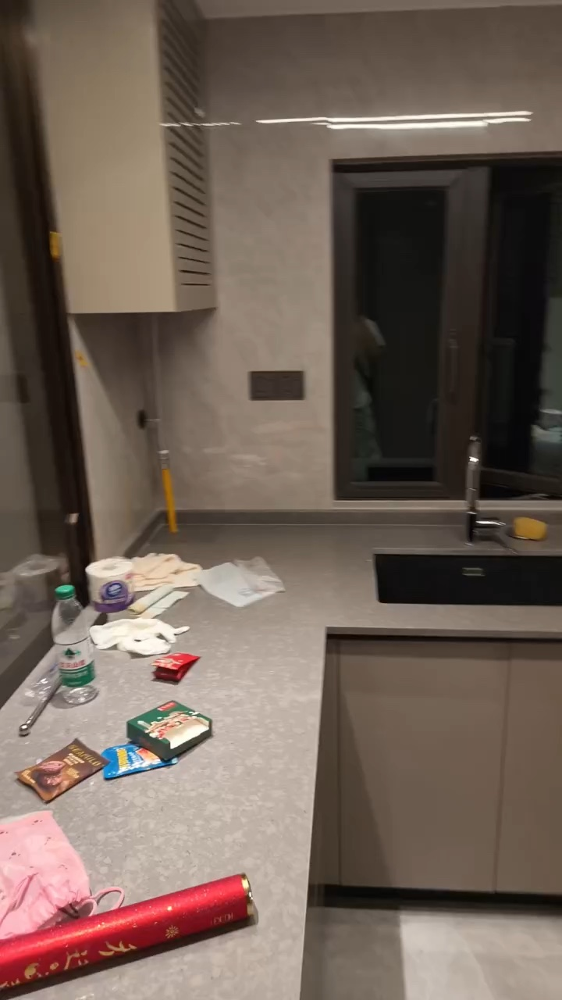
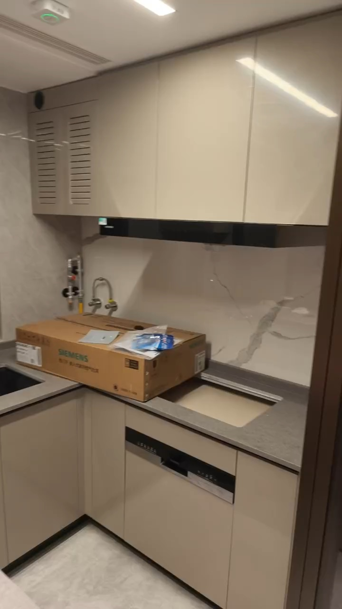
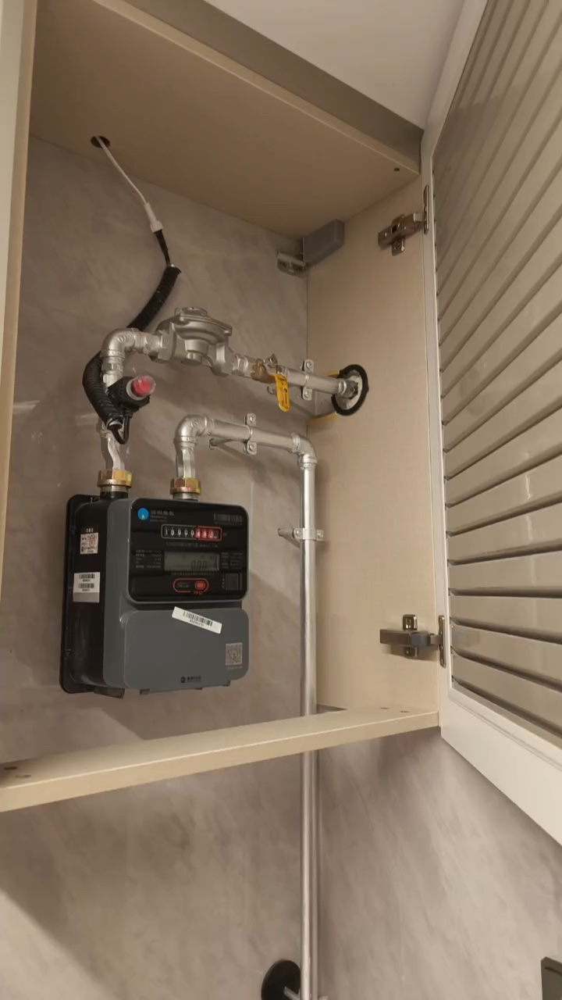

以从入户面向厨房窗的视角：左侧是玻璃隔断旁备餐台；正前窗下水槽；右侧台面为灶具安装孔，烟机在其正上方。
窗左上百叶柜内是燃气表，15.8秒可见表体和连接管。本版把表体移入该柜，加入百叶及打开查看开关。窗右侧可见竖管和出水接头，按外露部分示意，未补画看不到的暗管。
视频没有确认独立电表／配电箱。窗左深色小面板是插座，不能当成电表。电气点位图仍保留原来源，未据此视频改写未确认的点。



当前水槽640×420、灶具占位750×430mm仅为形体示意，视频不足以量出毫米尺寸；灶具本体是装好后的示意，拍摄时可见安装孔。燃气表柜及明管的高度与局部坐标待测。